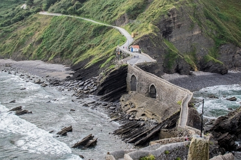
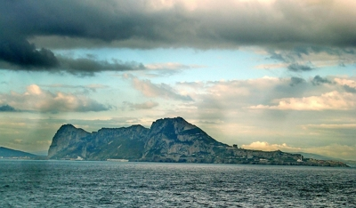
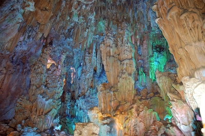
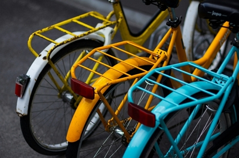

La próxima edición se celebra cerca de tí
Únete a profesionales y entusiastas del turismo en el evento líder del sector que se va a celebrar en el País Vasco. Conoce las últimas tendencias, establece contactos valiosos y planifica tus próximas aventuras. ¡Te esperamos del 22 al 26 de octubre!.
La Feria internacional de 2025 es el punto de encuentro para todos los amantes de los viajes. Durante tres días, reuniremos a las principales agencias de viajes, tour operadores, representantes de destinos y expertos en turismo para ofrecerte las mejores opciones para tu próxima aventura. Participa en charlas inspiradoras, talleres prácticos y sesiones de networking con profesionales de la industria. Descubre destinos emergentes, nuevas tendencias en viajes y oportunidades únicas para explorar el mundo.
Aquí tienes algunas de las actividades que puedes hacer:
-

Reserva tu espacio
Miércoles, 9:00 - Ceremonia de Apertura
Lugar: Auditorio María Maeztu
-

Conferencia Magistral: Auditorio María Maeztu
Conferencia sobre IA en la experiencia de viaje.
Ponente: Dra. Elisa Torres
Miercoles, de 10:30 a 12:00
¡No te lo puedes perder!
-

Aventura Extrema
Tours de aventura y deporte extremo.
Lugar: Auditorio María de Maeztu
-

Auditorio Francisco de Vitoria
Mesa Redonda: Turismo Sostenible.
Miércoles, 16:00 a 17:30